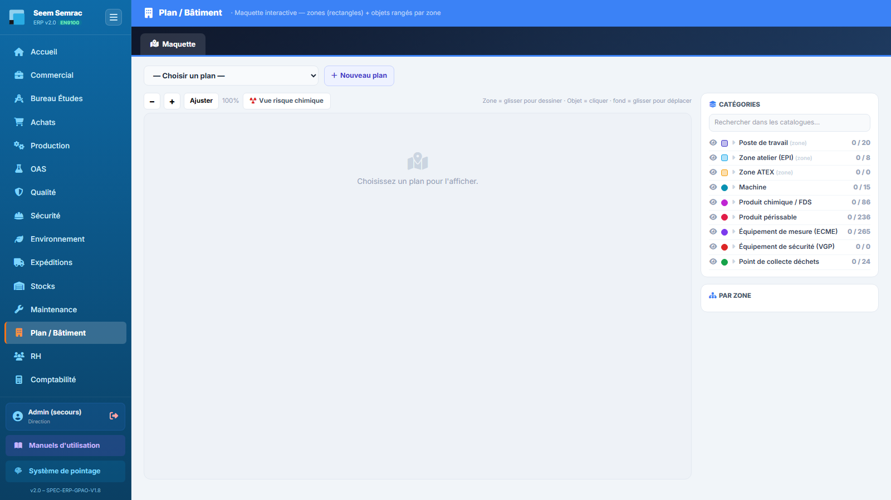
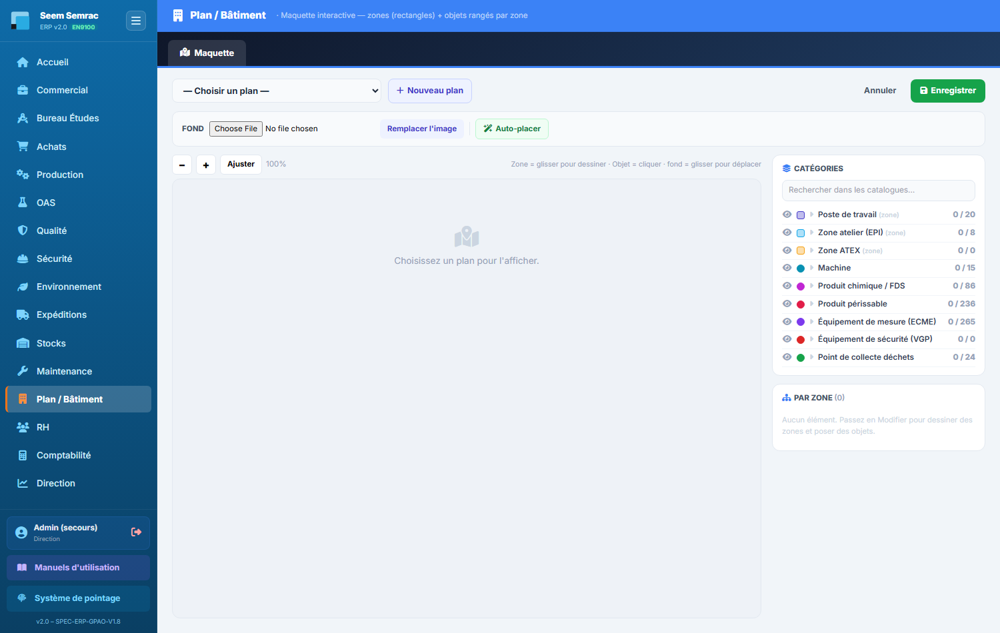

Le service Plan / Bâtiment est la maquette interactive de l'usine : on charge une image du plan des locaux, on y dessine les zones (rectangles : atelier, bureaux, magasin, zone ATEX…), puis on y pose des objets (postes de travail, produits chimiques, périssables, extincteurs) que l'on relie aux fiches déjà saisies dans les autres services. Résultat : une vue « où se trouve quoi » qui se colore toute seule quand une vérification est en retard ou qu'un produit périme. Ce manuel décrit l'unique onglet du service, écran par écran.
👤 Pour qui : Bureau d'Études, Production, Maintenance, Qualité, Direction (écriture) · lecture pour tout utilisateur connecté🧭 Dans l'ERP : Sidebar → Plan / Bâtiment🗂 1 onglet
1
Maquette
À quoi ça sert. L'ERP sait ce que l'on possède (postes, produits chimiques, extincteurs, périssables) mais pas où cela se trouve dans le bâtiment. Cet onglet répond à cette question : il superpose au plan des locaux des repères reliés aux vraies fiches de l'ERP. On s'en sert pour préparer un accueil sécurité ou une visite d'auditeur (« montrez-moi vos zones ATEX, vos extincteurs, vos stockages de produits chimiques »), pour situer un poste avant une intervention de maintenance, et pour repérer d'un coup d'œil ce qui est en retard : un extincteur dont la vérification périodique est dépassée ou un produit périmé devient rouge sur le plan.
Ce que vous voyez
La page est organisée en trois bandes. En haut, la barre de plan : une liste déroulante « — Choisir un plan — », le bouton « Nouveau plan », et à droite le bouton bleu « Modifier » (qui devient « Aperçu » une fois activé) accompagné de « Annuler » et du bouton vert « Enregistrer ». Au centre à gauche, la visionneuse du plan avec sa propre petite barre d'outils : − / + pour le zoom, « Ajuster » pour revenir à 100 %, le pourcentage courant, et le bouton « Vue risque chimique ». À droite, trois panneaux empilés : Catégories, Élément (n'apparaît que lorsqu'un repère est sélectionné) et Par zone.
Le panneau Catégories est le catalogue de ce qui est plaçable. Chaque ligne porte une icône œil (afficher / masquer sur le plan), la pastille de couleur — carrée pour une zone, ronde pour un objet —, le libellé, et un compteur « posés / catalogue » : « 4 / 12 » signifie que 4 fiches sont posées sur ce plan alors que l'ERP en contient 12 de ce type. Cliquez le libellé pour dérouler la liste : chaque fiche de l'ERP y apparaît, avec ✓ si elle est déjà posée (cliquez-la pour la localiser) ou + si elle reste à poser. Un champ « Rechercher dans les catalogues… » filtre l'ensemble d'un coup.
Trois catalogues de zone (tracées en rectangle) : Poste de travail (la zone porte ses process et ses machines) · Zone atelier (EPI) — le zonage Z1–Z7 / A qui porte la matrice des EPI obligatoires · Zone ATEX.
Six catalogues d'objet (posés en épingle) : Machine · Produit chimique / FDS · Produit périssable · Équipement de mesure (ECME) · Équipement de sécurité (VGP) · Point de collecte déchets.
Hors catalogue — un bloc ambré en bas du panneau regroupe les anciens tracés faits à la main, sans fiche correspondante dans l'ERP. Ils restent affichés mais ne sont plus créables ; le fond de plan porte déjà les noms de salles.
Le panneau Par zone affiche le nombre total d'éléments entre parenthèses, puis la liste groupée par rectangle : chaque zone est suivie des objets qu'elle contient et de leur compte (« 3 obj. »). Les objets posés en dehors de tout rectangle sont regroupés en bas sous Hors zone. Si des repères sont en défaut, deux bandeaux de synthèse s'affichent en tête de liste : ● N alerte(s) et ● N à surveiller.
Les repères se colorent tout seuls d'après les dates et statuts des fiches liées : à jour (vert) · à surveiller (orange) · alerte (rouge). Une zone en alerte prend un contour en pointillés, un objet en alerte prend un halo et une petite pastille de couleur en haut à droite de son épingle.
Détail des états calculés : pour un repère Sécurité, « VGP à jour », « VGP à prévoir (Xj) » à 30 jours ou moins de l'échéance, « VGP en retard (Xj) » au-delà. Pour un Produit périssable, « Valide », « Périme dans Xj » à 30 jours ou moins, « Périmé depuis le … ». Pour une Zone ATEX, « À jour », « Revue ATEX proche (Xj) » à 60 jours ou moins, « Revue ATEX en retard ».
Tant qu'aucun plan n'est choisi, la visionneuse affiche « Choisissez un plan pour l'afficher. » ; si le plan existe mais n'a pas encore d'image de fond, le message devient « Aucune image. « Modifier » puis chargez le plan. ».

Maquette — à gauche le plan avec ses rectangles de zones et ses épingles d'objets ; à droite le panneau Catégories (légende + filtres + compteurs « posés / catalogue ») et le panneau Par zone qui range chaque objet dans le local qui le contient.
Pas à pas — créer un plan et charger le fond
Cliquez sur « Nouveau plan ». Une petite fenêtre demande « Nom du plan : » — saisissez par exemple le nom du bâtiment ou du niveau, puis validez. Le plan est créé et automatiquement sélectionné dans la liste déroulante.
Cliquez sur « Modifier » : une barre grise « Fond » apparaît sous la barre de plan.
Dans cette barre, cliquez sur « Parcourir » et choisissez le fichier image de votre plan, puis cliquez sur « Remplacer l'image ». Le message « Envoi… » puis « Image mise à jour. » confirment l'opération, et le plan s'affiche immédiatement dans la visionneuse.
Réglez le confort de lecture avec + / − (par pas de 25 %, jusqu'à 400 %) et faites glisser le fond avec la souris pour vous déplacer dans le plan agrandi. Le bouton « Ajuster » ramène à 100 %.
Pour revenir sur un plan existant plus tard, il suffit de le rappeler par la liste déroulante en haut à gauche : ses repères sont rechargés automatiquement.
Attention : le fond de plan doit être une image — les formats acceptés sont PNG, JPG, JPEG, WEBP, GIF et SVG. Un PDF n'est pas accepté : si votre plan vient de l'architecte au format PDF, exportez-le d'abord en PNG ou JPG (une seule page, la plus lisible possible) avant de le charger ici.
Bon à savoir : l'image du plan est rangée dans la GED de l'ERP, exactement comme un plan de pièce ou un document technique. Elle reste donc disponible et versionnable indépendamment de la maquette.
Pas à pas — dessiner une zone (un local)
Les zones sont la charpente de la maquette : ce sont elles qui donnent un sens aux objets, puisqu'un objet est automatiquement rattaché au rectangle dans lequel il tombe. Commencez donc toujours par les zones.
Assurez-vous d'être en mode Modifier (le bouton bleu affiche « Aperçu » et la barre « Fond » est visible).
Dans le panneau Catégories, dépliez le catalogue voulu — Poste de travail, Zone atelier (EPI) ou Zone ATEX — puis cliquez la fiche à placer (par exemple le poste « Poinçonnage »). Un message apparaît : « → glissez sur le plan pour dessiner la zone : Poinçonnage ».
Glissez la souris sur le plan pour tracer le rectangle du local, d'un coin à l'autre. Un cadre en pointillés suit votre geste ; relâchez pour valider.
Le rectangle apparaît déjà nommé et déjà relié à la fiche choisie — il n'y a rien à saisir. Le panneau Élément s'ouvre à droite pour la note de placement et le lien vers la fiche d'origine.
Pour redimensionner une zone, tirez la petite poignée blanche située à son coin bas-droite. Pour la déplacer, faites glisser le rectangle lui-même.
Quand vos zones sont posées, cliquez « Enregistrer ». Le message confirme le nombre d'éléments sauvegardés et la page repasse en consultation.
À noter : un rectangle trop petit (moins de 2 % du plan en largeur ou en hauteur) est ignoré — c'est une sécurité contre les clics involontaires. Si votre zone ne se crée pas, refaites le geste en tirant plus largement.
Pas à pas — poser un objet
Toujours en mode Modifier, dépliez un catalogue d'objet — par exemple Machine, Produit chimique / FDS ou Équipement de mesure (ECME) — et cliquez la fiche à poser. Le message devient « → cliquez le plan pour poser : <nom de la fiche> ».
Cliquez (un simple clic, sans glisser) à l'endroit exact du plan où se trouve l'objet, de préférence à l'intérieur d'un rectangle de zone. L'épingle se pose et le panneau Élément s'ouvre.
En haut de ce panneau, une ligne rappelle le rattachement : « Zone : <nom du local> (auto) » sur fond vert si l'épingle est bien dans un rectangle, ou « Zone : hors zone — déplacez le repère dans un rectangle » sur fond orange sinon.
Le repère est déjà relié à sa fiche : vous n'avez rien à saisir. C'est cette liaison qui le fait vivre — elle apporte son état en direct (péremption, échéance VGP, revue ATEX, niveau de risque chimique) et le bouton d'ouverture de la fiche dans son service.
Ajoutez si besoin une note de placement (« contre le mur nord »…), puis cliquez « Appliquer ». Le message « Appliqué — pensez à Enregistrer. » vous rappelle que rien n'est encore sauvegardé.
Pour déplacer une épingle, faites-la simplement glisser : son rattachement à la zone est recalculé en direct. Pour la supprimer, utilisez la croix rouge en bout de ligne dans le panneau Par zone, ou le bouton « Supprimer » du panneau Élément.
Terminez par « Enregistrer ». Le bouton « Annuler », lui, abandonne toutes les modifications en cours et recharge la maquette telle qu'elle était en base.
Champ
Saisie
Obligatoire
Explication
Zone (rappel)
Affichage seul
—
Uniquement pour un objet. Indique le rectangle qui le contient, calculé automatiquement d'après sa position. Vert = rangé dans une zone, orange = hors zone.
Fiche liée
Affichage seul
—
Le repère est une fiche de l'ERP posée sur le plan. Son nom, sa catégorie et ses données viennent de cette fiche : pour les changer, ouvrez-la dans son service via le lien fourni.
Lien vers le service
Bouton
—
Ouvre la fiche d'origine (poste, machine, produit chimique, périssable, ECME, zone ATEX, vérification VGP, déchet). C'est là que se modifient le nom et les données ; le plan ne fait que les situer.
Note de placement
Texte
Non
Commentaire libre (consigne d'accès, précision d'emplacement…). Il s'affiche dans le panneau Élément lorsqu'on clique le repère en consultation.

Panneau « Élément » — la fiche liée en haut, le rappel de zone, le lien vers son service et la note de placement ; les boutons « Appliquer » et « Retirer du plan » en bas. Aucun libellé libre : le nom vient de la fiche.
Créer une zone ATEX ou un extincteur sans quitter le plan
On ne crée rien depuis le plan. Si une fiche manque au catalogue — une zone ATEX, un extincteur, un produit chimique —, elle se crée dans son service (Sécurité, Qualité, Production, Environnement), puis elle apparaît aussitôt dans le catalogue, prête à être posée. Le plan répond à la question « où est-ce ? », jamais à « qu'est-ce que c'est ? ».
Repère
Champ
Saisie
Explication
Zone ATEX
Nom de la zone ATEX *
Texte
Nom qui identifiera la zone dans le service Sécurité.
Type de zone
Liste : 0 · 1 · 2 · 20 · 21 · 22
Zonage réglementaire (gaz 0/1/2, poussières 20/21/22). Il détermine aussi la sévérité affichée en vue Risque chimique.
Localisation
Texte
Emplacement en clair.
Sécurité (extincteur…)
Équipement *
Texte
Désignation de l'équipement à vérifier, par exemple « Extincteur hall A ».
Organisme agréé qui réalise la vérification périodique.
Renseignez le formulaire puis cliquez « Créer & relier » (ou « Annuler » pour renoncer).
Le message « Créé dans Sécurité et relié au repère. Pensez à Enregistrer le plan. » confirme : la fiche existe désormais dans le service Sécurité et le repère lui est rattaché, libellé compris.
Cliquez « Enregistrer » pour figer la maquette.
Enchaînement : la fiche ainsi créée est une vraie fiche du service Sécurité. Il faut ensuite y compléter les dates (échéance de vérification, date de revue ATEX) depuis le service Sécurité — c'est ce qui permettra au repère de passer en orange puis en rouge le moment venu.
Pas à pas — pré-remplir la maquette avec « Auto-placer »
Poser un à un plusieurs dizaines de repères serait fastidieux. Le bouton « Auto-placer » (barre d'édition, en mode Modifier) fait le gros du travail : il compare le nom de vos zones à la localisation déjà renseignée en base pour les postes de travail, les produits périssables et les produits chimiques, et pose automatiquement les repères correspondants dans le bon rectangle.
Dessinez et nommez d'abord vos zones — sans rectangle, l'outil refuse et affiche « Dessinez d'abord des zones (rectangles). ». Donnez-leur des noms proches de ceux utilisés en base (par exemple « Oxydation », « Magasin », « Tôlerie »).
Cliquez « Auto-placer ». Une demande de confirmation récapitule ce qui va être posé, catégorie par catégorie, et combien d'éléments seront ignorés faute de zone correspondante.
Confirmez : les repères sont disposés en grille à l'intérieur de chaque zone, et le message final indique « Placés : N · ignorés : M. Vérifiez puis Enregistrez. ».
Vérifiez visuellement, déplacez les épingles à leur emplacement réel, puis cliquez « Enregistrer ».
L'outil ne crée jamais de doublon : un élément déjà posé sur ce plan est ignoré.
Les produits périssables archivés et les produits chimiques retirés ne sont pas placés — la maquette ne montre que ce qui est réellement en service.
Les éléments dont la localisation en base ne correspond à aucune de vos zones sont simplement comptés comme « ignorés » : à vous de les poser à la main, ou de renommer la zone pour qu'elle corresponde.
Si vous cliquez « Auto-placer » hors du mode Modifier, l'ERP répond « Passez d'abord en Modifier. ».
La vue « Risque chimique » (SEIRICH)
Le bouton « Vue risque chimique », dans la barre d'outils de la visionneuse, bascule le plan en carte du risque chimique de l'usine. Seuls les repères Chimie / FDS et Zone ATEX restent colorés — par leur niveau de risque — sur fond des rectangles de zones ; le panneau Catégories est remplacé par une légende qui compte les repères de chaque niveau.
Quatre niveaux, du plus grave au plus léger : Élevé · Moyen · Faible · — (non évalué).
Un repère chimique dont l'étiquetage est incomplet s'affiche avec un point d'interrogation. Ne le lisez pas comme « sans risque » : c'est une fiche à compléter dans le service Sécurité.
La cotation est indicative, calculée à partir des mentions de danger et des situations d'exposition. Elle ne remplace pas un mesurage ni l'avis d'un préventeur.
Un clic sur un repère chimique ouvre directement sa fiche produit 360 ; un clic sur une zone ATEX ouvre la zone dans le service Environnement.
La vue est réservée à la consultation : le bouton disparaît en mode Modifier, et passer en Modifier la désactive automatiquement.
Consulter la maquette au quotidien
Hors mode Modifier, la maquette est un outil de navigation : elle vous emmène vers la bonne fiche dans le bon service.
Choisissez le plan dans la liste déroulante ; les repères se chargent et se colorent selon leur état.
Utilisez les icônes œil du panneau Catégories pour ne garder à l'écran que ce qui vous intéresse (par exemple uniquement « Sécurité (extincteur…) » avant une ronde incendie).
Survolez un repère Poste de travail : une infobulle noire détaille le poste — la liste de ses process, la liste de ses machines, son taux effectif en €/h et son OPEX théorique en €/an.
Cliquez un repère : le panneau Élément affiche son libellé, sa catégorie, la zone qui le contient, l'élément lié, la pastille d'état (« VGP en retard », « Périme dans 12j »…) et vos notes.
Cliquez le bouton violet en bas du panneau pour ouvrir la fiche correspondante dans son service : « Ouvrir « Postes & Process » » (Production), « Ouvrir la vérification (VGP) » et « Ouvrir la matrice EPI de la zone » (Sécurité), « Ouvrir la zone ATEX » (Environnement), « Ouvrir la fiche produit chimique 360 » (Sécurité).
Règles & points d'attention
Rien n'est enregistré tant que vous n'avez pas cliqué « Enregistrer ». « Appliquer » ne fait que valider la saisie du panneau Élément à l'écran — le message le rappelle d'ailleurs à chaque fois.
Le rattachement objet → zone est toujours automatique et jamais saisi à la main : il découle de la position de l'épingle. Si un objet apparaît « Hors zone » dans la liste de droite, c'est qu'il est tombé à côté du rectangle — déplacez-le.
Quand deux rectangles se chevauchent, l'objet est rattaché au plus petit des deux : dessinez donc les grands ensembles d'abord, puis les locaux à l'intérieur.
Un repère non relié à une fiche reste gris et muet : pas d'état, pas d'infobulle, pas de lien. La valeur de la maquette vient de la liaison, pas du dessin.
Les couleurs d'état ne se saisissent pas : elles sont recalculées à chaque affichage à partir des dates réelles des fiches (échéance de vérification, date d'expiration, date de revue ATEX). Un repère qui reste vert alors que vous l'attendiez rouge signale une date manquante ou fausse dans la fiche source, pas un bug du plan.
Le compteur « posés / catalogue » du panneau Catégories est votre indicateur de complétude : tant que l'écart est grand, la maquette ne couvre qu'une partie du parc réel.
Les zones de la catégorie Atelier / Process peuvent être reliées au référentiel des zones d'atelier (Z1 à Z7 et l'allée piétonne A) : c'est ce qui permet d'ouvrir directement la matrice EPI de la zone depuis le plan.
Attention : « Annuler » abandonne toutes les modifications faites depuis le passage en mode Modifier — zones dessinées, objets posés, liaisons et suppressions comprises — et recharge la maquette telle qu'elle est en base. Il n'y a pas de retour en arrière après ce clic.
Astuce : la bonne séquence de mise en place est toujours la même — charger le fond → dessiner et nommer les zones → Enregistrer → Auto-placer → corriger les positions → Enregistrer. En enregistrant après les zones, vous sécurisez la charpente du plan avant de lancer le remplissage automatique.
Bon à savoir : plusieurs plans peuvent coexister (un par bâtiment ou par niveau), chacun avec sa propre image de fond et ses propres repères. Un même poste ou un même extincteur peut être posé sur plusieurs plans si nécessaire.